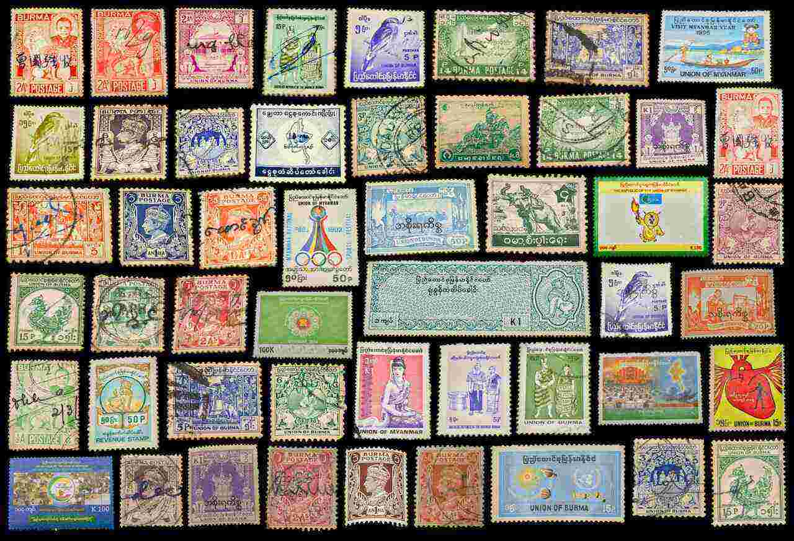
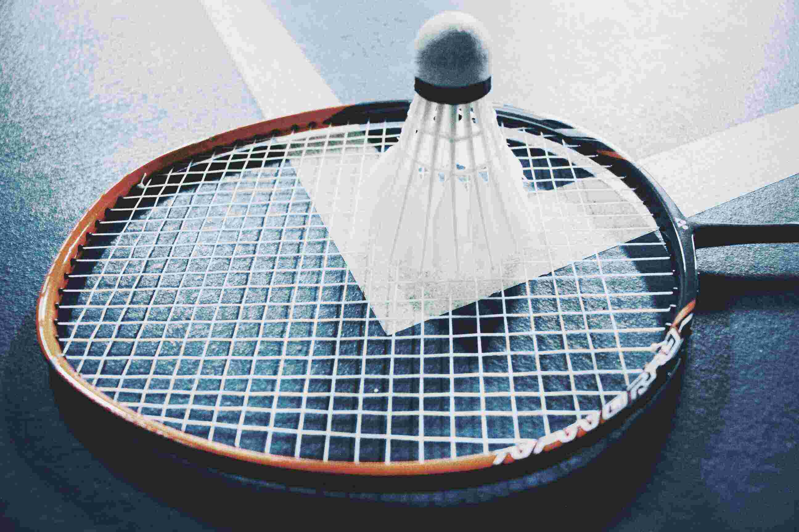

My hobbies include playing carrom, badminton, collecting stamps, and reading books. Each of these activities offers a unique way for me to engage with the world around you, whether it be through competition, exploration, or relaxation.
Playing carrom is a classic tabletop game that requires strategy and precision. I enjoy the challenge of outsmarting my opponents and sinking all of my pieces before they can do the same. Whether playing with friends or family, this game provides a fun and engaging way to spend my free time.
Badminton, on the other hand, is a fast-paced sport that requires quick reflexes and agility.I enjoy the rush of adrenaline that comes from competing against others and the satisfaction of improving your skills with each match. Whether playing in a formal setting or just for fun, badminton offers a great way to stay active and healthy.
Collecting stamps is a more introspective hobby that allows you to explore the world through the lens of history and culture.I enjoy the challenge of finding rare and interesting stamps and learning about the stories behind them. This hobby offers a great opportunity to expand my knowledge and appreciation of different cultures and time periods.
Reading books provides a relaxing and stimulating way to unwind and explore new ideas. I enjoy getting lost in a good story or learning about new topics through non-fiction books. This hobby offers a great way to broaden my perspective and gain new insights into the world around me.

Stamps Collecting

Playing Badminton

Reading Books